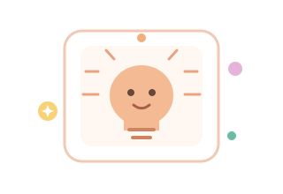
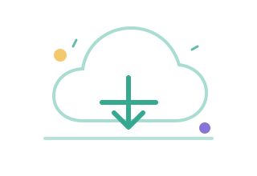

Memulai perjalanan belajar di Microsoft Learn
Catatan awal saya mengenal berbagai modul, jalur belajar, dan teknologi di Microsoft Learn.
BACA ARTIKELCATATAN PERJALANAN
Kumpulan cerita tentang teknologi, proses belajar, dan hal-hal baru yang saya temukan.
Catatan awal saya mengenal berbagai modul, jalur belajar, dan teknologi di Microsoft Learn.
BACA ARTIKELKenapa saya mulai dari dasar dan hal-hal kecil yang saya pelajari di sepanjang jalan.
BACA ARTIKEL
ARTIFICIAL INTELLIGENCEEksplorasi pertama saya tentang AI dan bagaimana teknologi ini bisa digunakan dengan bijak.
BACA ARTIKEL
CLOUD COMPUTINGMemahami ide di balik cloud dan alasan layanan ini menjadi bagian penting teknologi modern.
BACA ARTIKELRefleksi tentang berbagi proses, menemukan teman belajar, dan bertumbuh bersama.
BACA ARTIKELAlasan di balik website ini dan bagaimana catatan kecil membantu saya terus berkembang.
BACA ARTIKELBelum ada artikel yang cocok. Coba kata kunci lain.
Artikel yang disimpan dari dashboard akan tampil di sini pada browser ini.